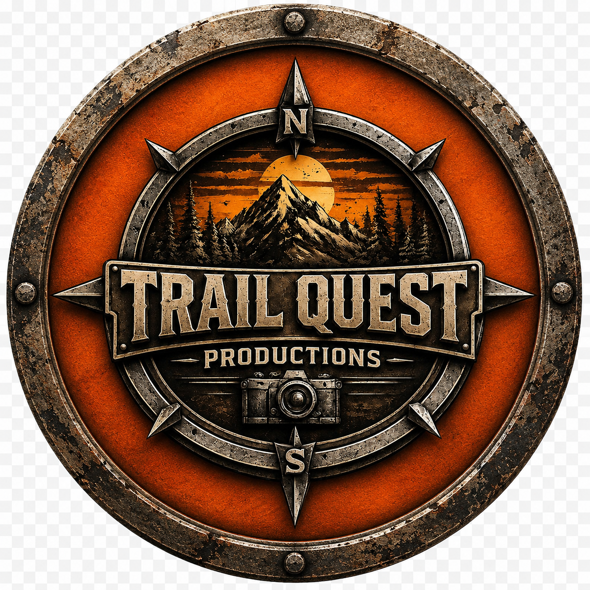
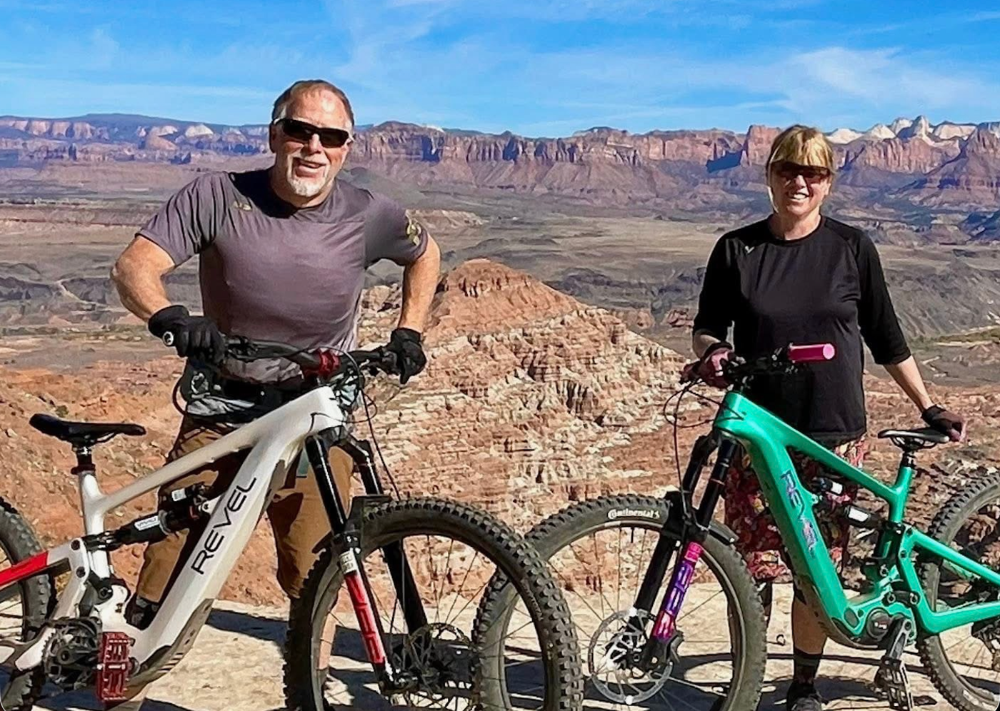

Cheyenne, Wyoming
Curt Gowdy State Park
Mountain bike destination story featuring rocky riding, big Wyoming landscape, camping access, drone footage, and the trail-system experience.
Watch on YouTube
Trail Quest ProductionsVideo • Photography • Drone • Destination Media
Video, photography, and digital content for tourism organizations, outdoor destinations, trail systems, and adventure businesses.
We help destinations, guide companies, and outdoor brands showcase experiences worth exploring.
Who we work with
Trail Quest Productions creates media for tourism boards, mountain towns, guide companies, trail systems, campgrounds, ranches, resorts, and outdoor adventure businesses.
Destination media that helps visitors understand why a place is worth the trip.
Video and photo content that shows terrain, scenery, access, amenities, and the overall ride experience.
Media for guided MTB tours, river trips, off-road tours, via ferrata, and outdoor experiences.
Visual storytelling for companies that need authentic outdoor content and adventure credibility.
Services
From short-form promotional edits to destination-focused storytelling, we create media designed to help outdoor businesses and destinations stand out.
Promotional, storytelling, and adventure-focused video content.
Landscape, lifestyle, action, and destination imagery for websites and marketing.
Aerial footage and stills that add scale, landscape context, and visual impact.
Content built to help people understand the experience, setting, and reason to visit.
Adventure Tourism Portfolio
Additional work from guided adventure, river, kayaking, and wilderness travel projects.
New Zealand
River journey promo featuring canoe travel, river scenery, and the Bridge to Nowhere.
Watch on YouTubeNew Zealand
Adventure tourism content featuring coastal scenery, kayaking, and destination-focused outdoor travel.
Watch on YouTubeNew Zealand
Adventure tourism sample featuring helicopter access, alpine scenery, hiking, and wilderness travel.
Watch on YouTube
About
Trail Quest Productions is run by Lee and Kelly — full-time travelers, riders, and outdoor storytellers creating media for tourism organizations, outdoor destinations, trail systems, and adventure businesses.
We spend our time exploring places, riding trails, capturing landscapes, and documenting experiences that help people understand what makes a destination worth visiting.
Our work is built around authentic outdoor experience, practical storytelling, and visuals that help inspire people to explore.